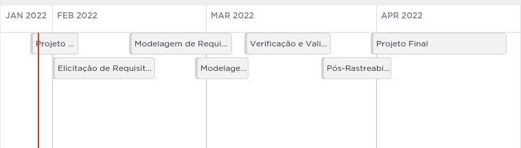
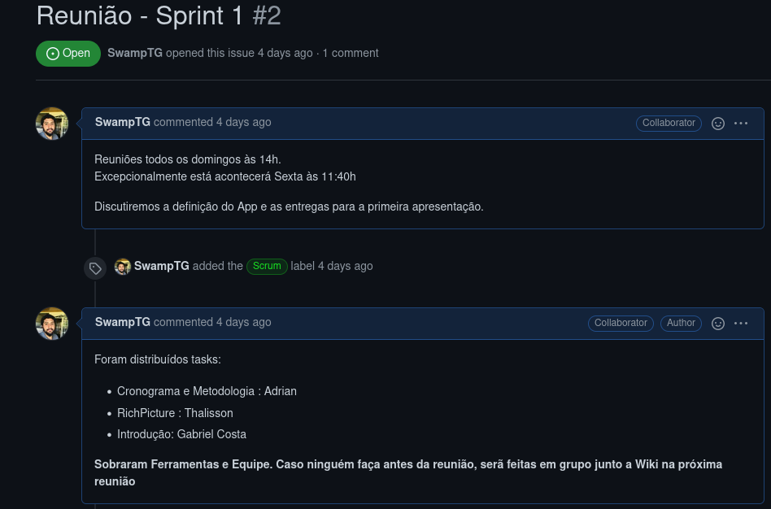

O cronograma foi orientado pelas próprias entregas da disciplinas e constará na sprint dedicada a cada atividade, colocaremos os responsáveis pelas issues e seus respectivos revisores. O cronograma poderá ser modificado ao longo do projeto, pois artefatos podem ser evoluídos e modificados. Além disso, novos contextos podem surgir.

Figura 1: Cronograma geral - visualização.Fonte: Autor
1.1. Cronograma geral
Cronograma definido com base nas entregas da própria disciplina, horários dos membros e prazos para que seja possível a revisão dos artefatos, antes de sua inclusão ao repositório.
Etapas
Apresentação
Descrição
Data de entrega
1
07/02
Planejamento do Projeto
05/02
2
21/02
Elicitação de Requisitos – Técnicas e Priorização
20/02
3
07/03
Modelagem de Requisitos: Cenários , Léxico, Use Case, Especificação Suplementar.
06/03
4
10/03
Modelagem de Requisitos - Ágil (Histórias de Usuário, Backlogs) NFR Framework
08/03
5
24/03
Análise de Requisitos: Verificação e Validação
22/03
6
04/04
Pós-Rastreabilidade: Gerência II
03/04
7
26/04
Projeto Final
25/04
Tabela 1: Cronograma de atividades.Fonte: Autor
1.2. Cronograma detalhado
1.2.1. Primeira entrega
Data da realização da tarefa
Planejamento do projeto
Responsáveis
Revisores
01/02
Ver repositórios Github
Todos
--
02/02
App
Gabriel
--
03/02
Equipe
Fernando
--
03/02
Rich Picture
Thalisson
Fernando
03/02
Ferramentas e Metodologia
Adrian
--
03/02
Cronograma
Adrian
--
Tabela 2: Primeira entrega.Fonte: Autor
1.2.2. Segunda entrega
Data da realização da tarefa
Planejamento do projeto
Responsáveis
Revisores
18/02
Brainstorm
Todos
Fernando
19/02
Storytelling
Adrian, João D.
Thalisson
19/02
Introspecção
Fernando, Adrian, Gabriel
João D.
20/02
5w2h
Thalisson, Gabriel
Fernando
20/02
Personas
João D.
Adrian
20/02
MoSCoW
Todos
Thalisson e Fernando
Tabela 3: Segunda entrega. Fonte: Autor
1.2.3. Terceira entrega
Data da realização da tarefa
Planejamento do projeto
Responsáveis
Revisores
05/03
Léxicos
Adrian
Fernando
05/03
Cenários
João D.
Thalisson
06/03
Especificação Suplementar
Thalisson
Adrian
06/03
Casos de Uso
Gabriel, Fernando
G. Gomes
Tabela 4: Terceira entrega.Fonte: Autor
1.2.4. Quarta entrega
Data da realização da tarefa
Planejamento do projeto
Responsáveis
Revisores
08/03
Backlog
Thalisson, João D.
João D.
09/03
Histórias de Usuário
Todos
Thalisson
09/03
NFR-Framework
Adrian
Fernando
Tabela 5: Quarta entrega.Fonte: Autor
1.2.5. Quinta entrega
Data da realização da tarefa
Planejamento do projeto
Responsáveis
Revisores
23/03
Verificação dos Casos de Uso
João D.
Thalisson, Adrian
23/03
Verificação do Rich Picture
João D.
Thalisson, Adrian
23/03
Verificação dos Léxicos
João D.
Thalisson, Adrian
23/03
Inspeção NFR Framework
Thalisson
Adrian
23/03
Inspeção dos Cenários
Thalisson
Adrian
23/03
Inspeção do Backlog
Adrian
Fernando, G. Gomes
23/03
Inspeção Especificação suplementar
Adrian
Fernando,Thalisson
23/03
Validação
Fernando, Gabriel
João D.
20/04
Correções
Todos
Todos
Tabela 6: Quinta entrega.Fonte: Autor
1.2.6. Sexta entrega
Data da realização da tarefa
Planejamento do projeto
Responsáveis
Revisores
03/04
Forward From
Fernando, João D.
Gabriel
03/04
Backward From
Adrian, Thalisson.
Gabriel, Fernando
Tabela 7: Sexta entrega.Fonte: Autor
Nós utilizaremos as issues do GitHub para atribuir tasks para cada um e os prazos de entrega de cada task.

Figura 2: Exemplo de Issue.Fonte: Autor
2. Bibliografia
Prime Video. Disponível em: https://github.com/Requisitos-de-Software/2021.2-Prime-video/blob/main/docs/planejamento/cronograma.md .Acesso em: 08/02/2022.
Histórico de Versão
Versão
Data
Alteração
Responsável
Revisão
0.0.1
29/01/22
Criação
Adrian
Fernando
0.0.2
29/01/22
Revisão gramatical
Adrian
João Durso
0.0.3
19/04/22
Colocados os conteúdos do trello nas tabelas em markdown